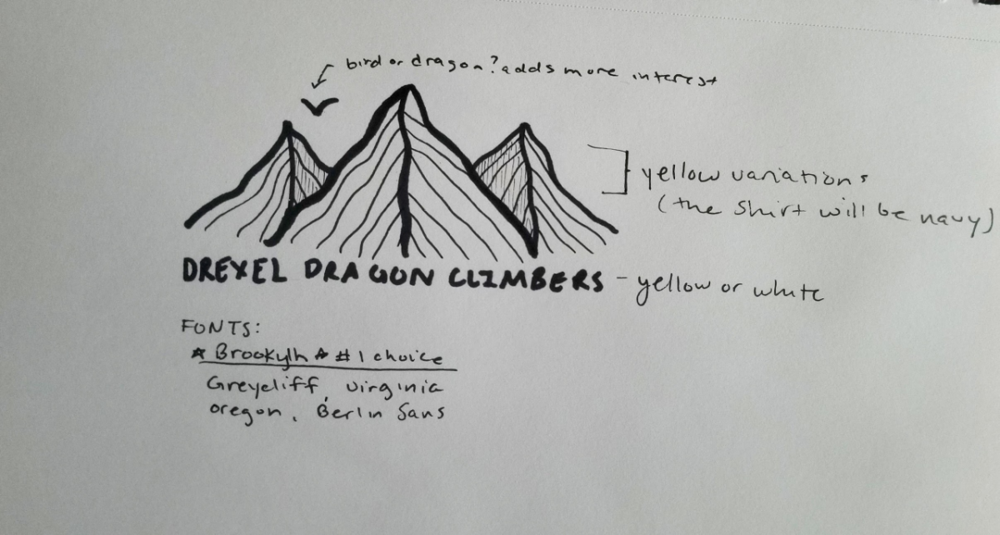
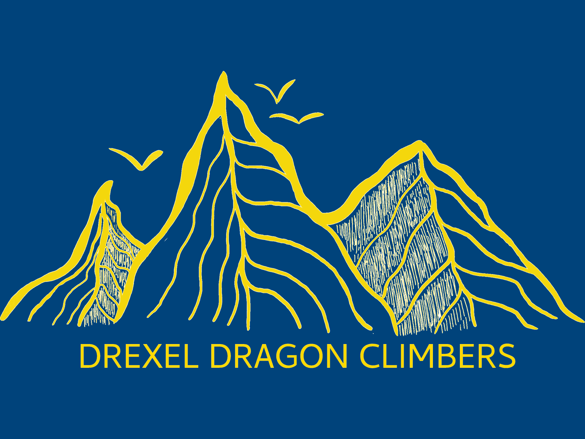
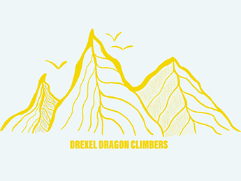

Drexel Dragonclimbers Logo
In this project for Drexel’s Climbing club, I served as the lead designer for their logo and merchandise. Overall, the club is relatively new and disorganized, so they did not have a clear set of goals in mind as an organization. This fact pushed me to prototype rapidly and always to obtain feedback on my designs.
This is the sketch that led to the overall final design. Keeping in mind that this design would be stitched onto apparel and hats, I went with a linework design that would translate well through the stitching.
This sketch was to test out the overall color scheme. This being a Drexel organization, I had to operate within the established color scheme. However, we realized that the design would simply look much better on a white background from this digital drawing.
This final iterations display the resulting logo that will be displayed on hats and shirts for the club.